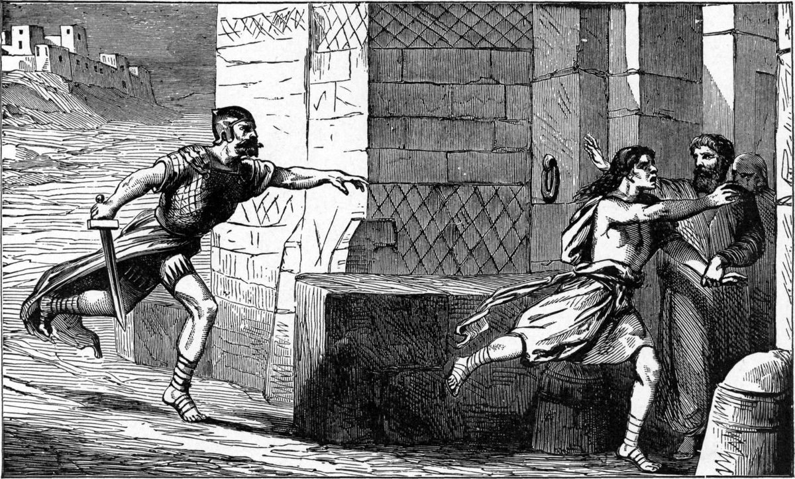

Josué 21 — La Traducción Mister

Un grabado de 1897 de la escena que describe Josué 20: el que mató sin querer llega a la puerta de una ciudad de refugio, donde los ancianos lo acogen mientras el vengador es contenido. La imagen ilustra la ley, no las listas de este capítulo; está aquí porque Josué 21 nombra las ciudades de refugio entre las ciudades de los levitas.

★★★ Los levitas acuden al sacerdote y al caudillo juntos, y acuden como jefes de casas paternas. El primer versículo reúne tres grupos en una sola frase: los jefes de las familias levíticas, Eleazar el sacerdote y Josué hijo de Nun, además de los jefes de las demás tribus. Josué 13:33 (ya en estas páginas) dice que a la tribu de Leví no se le dio heredad, así que llegan no con un reclamo de territorio sino con una petición sobre las ciudades que se les deben.
★★ La petición es Números 35, citada de vuelta a quienes debían cumplirla. En el v. 2 los levitas dicen que Jehová mandó por mano de Moisés que se les dieran ciudades para habitar, con su pastizal para el ganado. Números 35:2 (ya en estas páginas) da ese mandato casi con las mismas palabras.
★★ El lugar de la petición es Silo, donde estaba la tienda. Los levitas hablan a los jefes en Silo, que el libro ya presenta como sede de la tienda de reunión (Josué 18:1 y 19:51, ambos ya en estas páginas).
⚠ El v. 3 da las ciudades “por orden de Jehová”. El hebreo es el-pi YHWH, que aquí significa ‘por mandato de Jehová’, no un lugar. La TNM 1987 y la TNM 2019 dicen «por orden de Jehová»; esta traducción conserva las palabras del hebreo y la nota da su sentido.
★★★ Los levitas reciben sus ciudades por suerte, el mismo instrumento que repartió la tierra. La palabra goral, ‘suerte’, aparece en los vv. 4, 5, 6 y 8, y el hebreo del v. 10 da la primera suerte a los hijos de Aarón. Los levitas no tienen territorio propio, así que reciben parte de la tierra de las otras tribus por el mismo método que dio a cada tribu la suya.
★★ Cuatro familias, cuatro cifras, y las cifras son exactas. Los sacerdotes reciben trece ciudades (v. 4), el resto de Cohat diez (v. 5), Gersón trece (v. 6) y Merari doce (v. 7). Trece más diez son veintitrés, más trece son treinta y seis, más doce son cuarenta y ocho. El v. 41 dice ‘cuarenta y ocho ciudades’.
★★ Cada familia toma de un conjunto fijo de tribus. El v. 4 da a los sacerdotes trece de Judá, Simeón y Benjamín. El v. 5 da al resto de Cohat diez de Efraín, Dan y la media tribu de Manasés. Gersón, en el v. 6, toma de cuatro tribus, incluida la media tribu de Basán, y Merari, en el v. 7, de tres.
⚠ La cifra de Merari incluye a Rubén, cuyas ciudades el texto masorético no imprime. El v. 7 da a Merari doce ciudades “de la tribu de Rubén, y de la tribu de Gad, y de la tribu de Zabulón”. La lista que sobrevive (vv. 34–39) da cuatro a Zabulón y cuatro a Gad: ocho. Las cuatro que faltan son de Rubén, y solo ellas hacen que la suma sea doce. La laguna, por tanto, no es una conjetura: la cuenta que el capítulo ya comprometió la requiere.
★★ Hebrón se da a los sacerdotes, y el campo que la rodea se da a Caleb. El v. 11 da a los hijos de Aarón ‘Quiriat-arba, padre de Anac, es decir Hebrón’, con su pastizal. El v. 12 da los campos y las aldeas de la ciudad a Caleb. Josué 14:13–14 (ya en estas páginas) le había dado Hebrón como heredad. El capítulo divide lo que ese versículo había dado entero: la ciudad a los sacerdotes y la tierra alrededor al hombre.
★★ La cláusula ‘Quiriat-arba, es decir Hebrón’ aparece en dos versículos. La cláusula Qiryat Arba hi Chevron está en Josué 20:7 y aquí en el v. 11, ambos ya en estas páginas. Este versículo es el que da la ciudad a los sacerdotes.
★ El v. 9 dice que las ciudades ‘se nombran por nombre’, y luego las nombra. La frase asher yiqra etHen beshem, ‘que se nombran por nombre’, es la manera del libro de anunciar una lista. La lista sigue en el v. 13, en el mismo orden de tribus que el v. 4.
★★ La lista de los sacerdotes tiene el único refugio del grupo, y es Hebrón. El v. 13 llama a Hebrón ‘ciudad de refugio para el homicida’. La frase ir miqlat ha-rotzeach aparece en cinco versículos del texto de Josué 21 que se conserva (vv. 13, 21, 27, 32 y, en la numeración inglesa, 38), y además en Números 35 y Josué 20. Cada uno nombra una de las seis ciudades de refugio (Hebrón, Siquem, Gólan, Cadés y Ramot de Galaad), y la sexta, Bézer, está en las cuatro ciudades de la laguna de los vv. 36–37.
★★ Nueve ciudades de dos tribus es la suma que dice el versículo, y la lista la respalda. El v. 16 dice ‘nueve ciudades de esas dos tribus’. La lista da Hebrón, Libna, Yatir, Estemoa, Holón, Debir, Ain, Yuta y Bet-semes: nueve, todas de Judá y Simeón. Las cuatro de Benjamín en los vv. 17–18 (Gabaón, Geba, Anatot y Almón) completan las trece del v. 19.
★ La lista se lee en tres bloques, y cada bloque cierra con su propia cuenta. Judá y Simeón cierran en el v. 16 con ‘nueve’, Benjamín en el v. 18 con ‘cuatro ciudades’, y el v. 19 suma las trece. El hebreo usa la misma fórmula de cierre en cada bloque, así que la cuenta es parte de la lista.
★★ Siquem es el primer refugio de los cohatitas, y también es la ciudad donde Simeón y Leví mataron a traición. El v. 21 nombra a Siquem como refugio en la montaña de Efraín. La ciudad es el lugar de la matanza de Génesis 34:25–26 (ya en estas páginas); Josué 20:7 (ya en estas páginas) la había hecho refugio para quien mató sin querer. El capítulo le da, pues, dos papeles a la misma ciudad, para dos clases de muerte.
★★ ‘Gat-rimón’ aparece dos veces en cinco versículos, y el texto no dice si es una ciudad o dos. El v. 24 da a Dan ‘Ajalón con su pastizal, Gat-rimón con su pastizal’, y el v. 25 da a Manasés ‘Taanac con su pastizal, y Gat-rimón con su pastizal’. El hebreo tiene las mismas consonantes las dos veces, y el nombre aparece también en la heredad de Dan (Josué 19:45, ya en estas páginas). Si el v. 25 nombra una segunda ciudad del mismo nombre en Manasés, o la misma ciudad reclamada por dos suertes, el texto no lo dice, y esta traducción no decide.
★ Diez, de tres tribus, en tres bloques. Efraín da cuatro (Siquem, Gezer, Quibsaim y Bet-jorón, vv. 21–22), Dan cuatro (Eltequé, Gibetón, Ajalón y Gat-rimón, vv. 23–24), y Manasés dos (Taanac y Gat-rimón, v. 25): diez, como dice el v. 26.
★★★ Beeshterá aparece aquí y en ningún otro lugar de la Biblia hebrea, y el paralelo de Crónicas da otro nombre en su lugar. El v. 27 da a Gersón ‘Gólan en Basán … y Beeshterá’, la segunda de las ciudades de la media tribu de Basán. Las consonantes solo están aquí (verificado en todo el corpus). El paralelo de 1 Crónicas 6:56 (todavía no en estas páginas) da Astarot, el plural de la misma raíz, en ese lugar. Esta traducción imprime lo que dice Josué y registra la variante aquí.
★★ Gólan y Cadés son ambas refugios, y Cadés es un nombre que el libro ya ató a Neftalí. El v. 27 nombra a Gólan, de la media tribu de Manasés, como refugio; el v. 32 nombra a Cadés en Galilea, en Neftalí, como el siguiente. Josué 20:7 (ya en estas páginas) la nombró primera de las seis, y Josué 19:37 ya la había puesto en la suerte de Neftalí.
★ Trece otra vez, y la cuenta cuadra. El v. 27 da dos (Gólan y Beeshterá), los vv. 28–29 dan cuatro a Isacar (Quisón, Dabérat, Yarmut y En-gannim), los vv. 30–31 cuatro a Aser (Misal, Abdón, Helcat y Rehob), y el v. 32 tres a Neftalí (Cadés, Hamot-dor y Cartán). Son trece, como dice el v. 33.
★★★ El texto masorético tiene dos versículos menos, y el faltante empieza justo donde deberían estar las ciudades de Rubén. El hebreo de los vv. 34–35 da las cuatro de Zabulón: Jocneam, Cartá, Dimná y Nahalal. El siguiente versículo del hebreo trata de Gad. Entre ambos, el texto masorético no imprime nada para Rubén, y la numeración inglesa, que siguen la KJV y la TNM, tiene aquí dos versículos, el 36 y el 37, que esta traducción imprime como laguna en lugar de renumerar el resto.
★★ Dos testigos masoréticos confirman la laguna, y ninguno aporta las palabras que faltan. El texto de Mechon archivado en nuestro repositorio no tiene los versículos de Rubén, y una copia nueva de la misma página tomada el mismo día tampoco. Una segunda edición masorética, el texto JPS en Sefaria, imprime el capítulo en cuarenta y cinco casillas numeradas y deja en blanco las dos de Rubén; la laguna está, pues, en la tradición masorética tal como se imprime hoy, no es un fallo de nuestro archivo. Los nombres de Rubén se conservan en el paralelo de Crónicas, que también es masorético, y esta traducción los toma de ahí.
★★ Las cuatro ciudades de Rubén son Bézer, Jahaz, Quedemot y Mefaat, y el paralelo de Crónicas las da en ese orden. Bézer es la ciudad que Josué 20:8 ya nombró como refugio ‘en el desierto, en la llanura’. Así, la sexta ciudad de refugio solo se nombra en los versículos que el texto masorético no tiene.
⚠ La laguna no se rellena en la traducción. El panel de la laguna dice de dónde viene. Si hubiéramos puesto los nombres en el texto como si el hebreo los dijera, habríamos impreso una lectura que el texto masorético no contiene. El panel da los nombres según el paralelo de Crónicas; esta nota da la razón.
★★ Ramot de Galaad es el quinto refugio que nombra el hebreo que se conserva. El v. 38 da a Gad ‘Ramot de Galaad, ciudad de refugio para el homicida’. Josué 20:8 (ya en estas páginas) la había nombrado entre las tres al otro lado del Jordán.
★ Cuatro en Gad, y cuatro en total. El v. 39 da Hesbón y Jazer y dice ‘cuatro ciudades en total’, lo que confirma la suma del grupo de Gad (Ramot y Majanaim en el v. 38, Hesbón y Jazer aquí). Majanaim es el lugar donde Jacob se encontró con los ángeles y donde David huyó de Absalón.
★★★ El total de doce para Merari, y cuarenta y ocho para los levitas, depende de las cuatro ciudades de Rubén que faltan. El v. 40 dice que la suerte de Merari fueron ‘doce ciudades’, y el v. 41 que las ciudades de los levitas suman ‘cuarenta y ocho’. La lista de Merari que sobrevive tiene ocho. La suma solo cuadra si se añaden las cuatro de Rubén, y la nota del v. 7 mostró que el capítulo ya se había comprometido con las mismas doce. Ambos totales están en la página, y la página muestra que la lista masorética no llega a ellos.
★★ Cada ciudad de los levitas viene con su pastizal alrededor. El v. 42 dice que cada ciudad tuvo su pastizal ‘alrededor’, y la lista repite la frase en cada entrada. La palabra migrash nombra el terreno abierto alrededor de un pueblo, el pasto de los levitas. Números 35:4–5 (ya en estas páginas) fija ese terreno por medida: mil codos desde el muro de la ciudad, y dos mil para la medida exterior.
★★★ La frase ‘no falló ni una palabra’ aparece en tres versículos de la Biblia hebrea. La cláusula lo-nafal davar está verificada consonánticamente en toda la Biblia hebrea: aparece en Josué 21:45 (aquí), Josué 23:14 (ya en estas páginas) y 1 Reyes 8:56. Josué 23:14 la repite en el último discurso de Josué; 1 Reyes 8:56 la usa para la dedicación de Salomón.
★★ La tierra está dada, los enemigos están dados, y el reposo está dado, y el capítulo nombra cada cosa a su turno. El v. 43 dice que Jehová dio toda la tierra que había jurado dar. El v. 44 dice que dio reposo por todas partes, y que ningún hombre de sus enemigos les pudo hacer frente. El v. 45 dice que no falló ni una palabra. Los últimos tres versículos del capítulo convierten la lista de ciudades en una promesa cumplida.
⚠ El v. 43 tiene dos verbos para la tierra, y la traducción conserva ambos. El primero es natán, ‘dar’, para lo que hizo Jehová; el segundo es yarash, ‘tomar en posesión’, para lo que hizo Israel. La Reina-Valera lee ‘la tomaron en posesión’, que conserva el segundo verbo y deja caer la distinción entre dar y tomar.
Ecos cumplidos. Josué 20 había prometido que se nombrarían las ciudades de los levitas, y que los seis refugios serían ciudades levíticas (20:4–5). La suerte levítica nombra ahora cinco de ellas: Hebrón (v. 13), Siquem (v. 21), Gólan (v. 27), Cadés (v. 32) y Ramot de Galaad (v. 38). Bézer, la sexta, está en los versículos de la laguna. Josué 19:51 había puesto la tienda en Silo, y Josué 21:2 hace que los levitas se reúnan allí.
Ecos planteados. Josué 22:9 (ya en estas páginas) envía a Rubén, Gad y la media tribu de Manasés a casa desde Silo, el lugar donde se dieron las ciudades de los levitas. 1 Crónicas 6 (todavía no en estas páginas) es el paralelo que aporta los nombres de la laguna y dos de sus variantes (Astarot por Beeshterá, y las otras ciudades de Manasés). Josué 23:14 (ya en estas páginas) repite la frase que cierra este capítulo.
Decisiones. Se mantiene la numeración inglesa, con los vv. 36 y 37 como laguna, en lugar de renumerar el resto del capítulo. Por eso los vv. 38 a 45 de esta traducción llevan el hebreo de los versículos masoréticos 36 a 43. Esto sigue la regla de la casa para versículos que faltan (Hechos 8:37). Los nombres de Rubén van en el panel de la laguna, tomados del paralelo de Crónicas, y no se presentan como hebreo de Josué. Migrash es ‘pastizal’ en todo el capítulo, la misma traducción que en Números 35.
Biblioteca. No hacen falta entradas nuevas en el diccionario ni en la enciclopedia para este capítulo. Las entradas existentes miqlat, migrash, goral, levi y ratzach sostienen los términos del capítulo.
⚠ Nota sobre el orden: Josué está en estas páginas en los capítulos 1–24. El libro está completo en estas páginas.